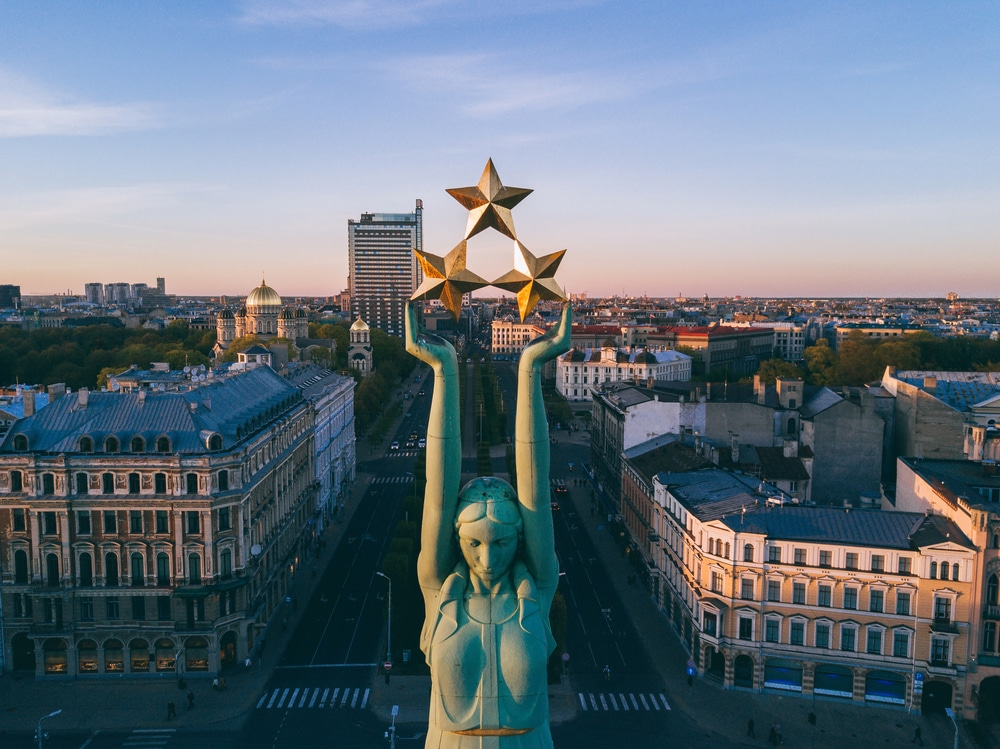

Vecriga
The old centre of Riga on the right bank of the Daugava River is a UNESCO World Heritage Site. On these scurrying cobblestone
streets and sociable squares are Riga’s oldest houses and churches. Vecrīga is stacked with restaurants, nightspots, art
galleries and museums. At a cafe you have to order the dessert named after Vecrīga , made from choux pastry filled with
curd and vanilla cream and dusted with icing sugar. 1234
Art Nouveau Architecture
Riga is an Art Nouveau wonderland, with more than 800 buildings, a third of the city’s stock, dating from the prime years
of the movement at the start of the 20th century. This is the world’s largest collection of Art Nouveau architecture,
easy to identify for its curved doorways and windows, abundant floral reliefs, female sculptures, whimsical gargoyles
or Romantic nationalist imagery. The reason for this proliferation of Art Nouveau is that Riga had a financial boom and
needed fashionable homes for a growing bourgeoisie when the movement was flourishing.
Town Hall Square
Standing on Riga’s Town Hall Square and gazing at the Town Hall and House of the Blackheads, it’s mind-boggling to think
that these monuments are little more than 20 years old. The reconstruction is seamless, and the plaza has a grandeur fit
for a capital. Sticking out like a sore thumb next to the House of the Blackheads is a dark and squat 1970s Soviet building
that until recently contained the Occupation Museum. The Roland Statue, depicting a mythological knight, is a signature
of historic German towns, symbolising the city’s Medieval privileges.
House of the Blackheads
The pièce de résistance on Town Hall Square is undoubtedly the magnificent House of the Blackheads, first built for an association
of unmarried merchants and ship-owners in the 1330s. This exuberantly adorned brick building was a nexus point for business
and trade in Riga during the Hanseatic years. And as they were bachelors, the Blackheads were known for bringing life
to Riga society, organising parties and celebrations
Three Brothers
At 17, 19 and 21 Mazā Pils Street stand the oldest complex of houses in Riga, dating from the 15th century. The oldest facade
is no. 17, which has a mix of Gothic and Renaissance in its crow-stepped gable and the pointed arch on its doorway. Painted
pale yellow, No. 19 dates to the middle of the 17th century and blends Renaissance with Dutch Mannerist design. The distinguished
Classical portal here is newer and was built in 1746. This building houses the Latvian Architecture Museum if you’re curious.
Lastly, the slender no. 21 is a Baroque dwelling from the end of the 17th century, with a flowing curved gable.
Freedom Monument
East of Vecrīga this solemn landmark remembers the soldiers killed fighting Soviet forces during the Latvian War of Independence
(1918-20). Standing 42 metres high, the Freedom Monument (1935) is built from red granite and travertine, and crested
by a copper sculpture of Liberty holding three golden stars. This monument remains the centrepiece for official remembrance
ceremonies in the city

Bastejkalna Parks
The park around the Freedom Monument reaches across both sides of the Pilsētas Kanāls (canal), which meanders along the course
of Riga’s old moat. The resplendent buildings neighbouring the park, like the Latvian National Opera and University of
Latvia, all add to the sense of ceremony. Watch the sun go down from the hill and amble beside the canal to see the ducks,
swans and beavers.
Riga Central Market
Included in Riga’s UNESCO World Heritage Site, the Riga Central Market is one of the largest and most visited markets in
Eastern Europe. Up to 100,000 shoppers enter its pavilions every day. The building is a wonder in its own right, constructed
in the second half of the 1920s and repurposing German zeppelin hangars into pavilions.